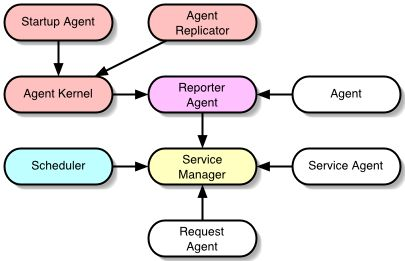
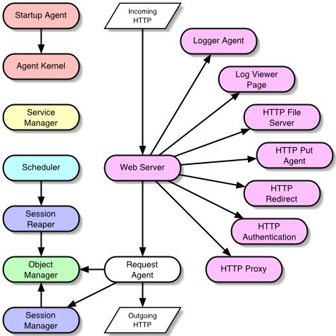
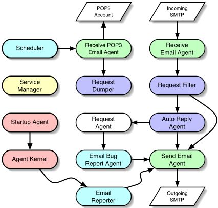
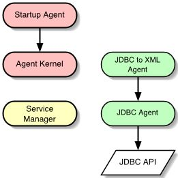
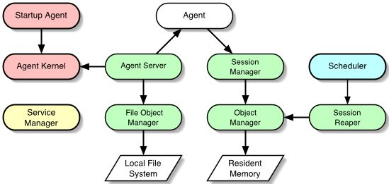

Kernel Agents
Agent programming is made possible by the Kernel Agents, which are responsible for many of the critical low-level agent operations. The most important agent is the Agent Kernel itself which is responsible for creating, starting, stopping, and destroying all agents. The Agent Kernel's first responsibility is creating and starting the Startup Agent, which loads and starts all the other agents. You will note that these Kernel Agents play a fundamental role in supporting both the Web and Email agents, which are described in later sections.
This section briefly describes the role of each of the Kernel Agents:
Kernel Agents and Their Relationships
Agent
All agents implement the Agent model and are capable of using their own properties and state information to provide appropriate functionality. Agents provide methods that are critical to their life-cycle and operation. By default. each agent possess the following properties:
- name - the agent's internal name to be displayed in agent output (default: same as class name)
- id - the agent's id (default: assigned by the agent kernel)
- hide_println - disables println output if set to true (default: false)
- hide_debug - disables debug output if set to true (default: false)
- hide_warning - disables warning output if set to true (default: false)
Agent Kernel
The Agent Kernel is responsible for managing the life-cycle of all agents, but it does not otherwise keep track of these agents, or attempts to manage any other aspect about them. The Agent Kernel is an Agent itself, and adheres to standard agent interfaces.Startup Agent
This Startup Agent is created and started by the Agent Kernel. It is responsible for loading property files from the startup directory (text files ending in .startup), sorting them alphabetically, and then creating and starting an agent for each using the Agent Kernel. Each new agent is defined by properties (Props) loaded from each file. The startup process is synchronous, ensuring that each startup agent is loaded and started before the next. You can artificially specify loading order by prefixing .startup filenames with numbers (ie: 100_StartupAgent.startup).Service Manager and Service Agents
The Service Manager provides a directory service were agents can register themselves as a service for other agents to lookup and use. Service Agents can be extended to automatically register an agent as a service with the Service Manager, and contain methods that can be used by subclasses to manually register and unregister themselves. Most agents are Service Agents because of the social needs of agents that depend on other types of agents.Agent Replicator
An Agent Replicator can be used to create and start multiple instances of another type of agent. This is a common activity when creating a pool of agents for parallel agent architectures.Scheduler and Scheduled Agents
The Scheduler provides scheduling services to wakeup Scheduled Agents using a customized schedule. The Scheduler automatically registers itself with Service Manager when it starts, and Scheduled Agents automatically schedule themselves when they are started.Request Agent
Request Agents can be extended to provide a method for passing generic messages to agents as an Agent Request. The Agent Request holds references to passed parameters and provides support for returning streamed output. Request Agents register themselves with the Service Manager upon starting (they are a subclass of Service Agent) and are commonly used by both Web and Email agents for handling network requests.Web Agents
The Web Agents represent a set of agents that cooperate to implement the functionality of a typical web server. Because each significant feature is implemented as an agent, only the required functionality needs to be loaded for a specific application. This keeps things lightweight and extensible, as existing components can also be replaced by others with enhanced functionality.These Web Agents pass HTTP request information to Request Agents which can be extended to generate dynamic content for HTML, WAP, or even XML applications. The Web Server agent itself can be easily extended to support SSL using third party encryption libraries.
Supported Features
The following diagram illustrates the Web Agents including the Kernel Agents they rely upon. Request Agent is extended to handle HTTP based Agent Requests to provide dynamic content generation. These Web Request Agents register themselves to handle specific URLs (like a CGI script) and wait for the next request to handle content generation for that URL from the Web Server.
- Customizable Request Agents (Easier than servlets!)
- File Serving
- Server Redirection
- Proxying
- Client Authentication
- Supports WAP and XML
- Multihoming
- Access Logging
- Web-based Use Statistics
- Sessions (Using Session Manager)
- Cookies
- Easily Extended To Use a SSL Socket Library
Note: In this diagram, involvement of the Service Manager is implied but not drawn. The Service Manager is the center of the Web Agent programming.

This section briefly describes the role of each of the Web Agents:
Web Server Agents and Their RelationshipsWeb Server
The Web Server is responsible for listening for incoming HTTP connections and directing the request to the agent responsible for handling the request. The Web Server passes these requests to Request Agents which have registered themselves with the Service Manager. The Web Server agent can be easily extended to support more secure SSL sockets provided by third-party APIs (i.e. Phaos SSLavaTM).Log Viewer Agent
This agent registers itself into the ServiceManager and accepts http requests to view information stored in log files. Given a directory, this agent will look for all the files in that directory and treat them as log files. The agent uses a mapping which provides information about how these files should be displayed. The logfile mapping maps a name to a text pattern. The agent will display the names and the matching lines of the log files.HTTP File Server
The HTTP File Server responds by streaming back a file requested by the Web Server. It serves files from a specified directory, and also handles directory indexing (when enabled). It is not necessary to start the File Server agent unless static files or graphics need to be served.HTTP Put
This agent can be loaded to support traditional HTTP Put functionality, saving files received to the specified "html_directory". You must specify this agent's service name for the "put_agent" property in the webserver. This agent can be easily replaced by a different RequestAgent for custom handling of HTTP Put requestsHTTP Redirect
This Request Agent is used by the WebServer. The WebServer uses this agent to determine whether a web request should be redirected and if so, the request is given to this agent for it to handle. This agent requires a file which lists the requests which to redirect. Requests with more than one redirect (listed in the file) will be cycled. The file format is name value pairs delimited by newlines and lines starting with '#' are ignored.HTTP Authentication
The HTTP Authentication agent is used to provide support for client authentication where the browser pops up a password dialog. When the Web Server is using this agent, all unique accesses are password authorized based on a list of protected realms read at startup from a text file.HTTP Proxy
The HTTP Proxy forwards specific URL requests to other web servers using HTTP. On startup, a list of proxy aliases is read from a text file.NOTE: Technical documentation for the Web Agents is located in docs/webserver.htmlE-mail Agents
The Email Agents can be used individually or collectively to provide a variety of features and services to agent applications. The Send Email Agent can send email based messages to people and other email-based services. Email messages can be received directly through SMTP by the Receive Email Agent and routed to Request Agents registered with the Service Manager with own unique email address. The Email Bug Report Agent is perfect for reporting bug and status information.
This section briefly describes the role of each of the Email Agents:
E-mail Agents and Their RelationshipsEmail Reporter Agent
This is a Reporter Agent logs AK agent output to sequentially named text files. Upon loading, this agent replaces the default Reporter Agent.Receive Email Agent
This agent opens up a server socket to receive SMTP requests and routes them to agents who have registered themselves with the Service Manager under a unique email address.Receive POP3 Email Agent
This agent opens up a server socket to a POP3 server, downloads new email and routes them to agents who have registered themselves with the Service Manager under a unique email address.Send Email Agent
This agent queues up email messages and sends them to the smtp_host at regular intervals. There are a variety of properties that can be configured which define how and when these messages are sent. This agent implements the SendEmailInterface and registers with the Service Manager for other agents to use.Auto Reply Agent
This agent registers itself as an email address that is received by the Receive Email Agent. When it receives an email message, it automatically replies with a configurable response. This agent can be extended to interpret the message and provide a dynamically generated response instead.Email Bug Report Agent
This agent registers itself with the Service Manager as a Bug Reporter and collects bug "reports" from other agents. On a configurable schedule, these bug reports are put into an email message and sent to a list of recipients. It is very useful for monitoring the status of autonomous agent applications.Request Dumper Agent
This is a simple Request Agent that dumps received Agent Request information to the console. It is useful for viewing and/or debugging email messages received by the Receive Email Agent. Note: It can also be used to dump requests from the Web Server.Request Filter Agent
This agent proxies requests to another request agent and in the process, it caches the props for each request. Cached requests are filtered depending on the filter_interval property and the requests that made it through the filter are emailed to the list of email addresses provided by the recipients property.JDBC Agents
This agents interacts with the JDBC API.
Database Agents and Their RelationshipsJDBCAgent
The JDBC Agent is used to connect to a JDBC compatible database. This agent knows how to connect to a database using the JDBC API. This agent is able to establish a connection with a database and update, insert, and query tables and records.Swing Agents
The Swing Agents interact with a user using the Swing API.AbstractJFrameAgent
This abstract Agent contains basic functionality useable by an agent that manages a JFrame. Methods in this abstract implementation can be overridden to create and manage any subclass of JFrame. Convenience methods are provided for handling menus and the menu bar, as well as the Look and Feel used by Swing.AbstractJFrameControler
This class acts as an agent-based proxy for a standard AWT frame. It creates an inner class called ControlledFrame whose paint method is forwarded to the drawFrame method which is intended to be overridden by subclasses of this class.StartupEditor
This is a Startup Agent which can be used to edit Agent Kernel .startup files. To use this agent, you must invoke the com.cometway.ak.AK class using the -startup_agent com.cometway.swing.Startup editor option. This will load the current startup configuration into the Startup Editor application, where changes to the agent Props files can be made using a Swing based GUI. Saving the configuration will delete the old .startup files, and write out the new configuration.Lightbox
This agent displays a frame that contains Lights, or more accurately colored squares, that are drawn in a grid style array. The LightBox agent registers itself with the Service Manager so that it may be found and used by other agents to display state information.PropsEditor
This agent is used by the StartupEditor agent application. This agent can be used to present a JFrame containing a JTable-based Agent Props editor. The edit_props property must be set to reference the Props that will be edited before this agent is started.StartupEditor
This is a Startup Agent which can be used to edit Agent Kernel .startup files. To use this agent, you must invoke the com.cometway.ak.AK class using the -startup_agent com.cometway.swing.Startup editor option. This will load the current startup configuration into the Startup Editor application, where changes to the agent Props files can be made using a Swing based GUI. Saving the configuration will delete the old .startup files, and write out the new configuration.Object Manager Agents
This package contains a model and reference implementations for an object-driven databases. There are implementations of memory resident and file-based Object Managers. This model can be easily extended to use SQL or XML storage mediums.
Object Manager Agents and Their RelationshipsAgent Server
The Agent Server agent provides basic functionality for agent management services. It provides a method of creating and controlling agents that are defined by Props stored in the Object Manager. The Agent Server automatically registers itself with the Service Manager upon startup.Session Manager and Session Reaper
This pair of agents uses the Object Manager to manage expiring sessions. The Session Manager is responsible for creating sessions, and the Session Reaper is a Scheduled Agent that is responsible for removing sessions after they have expired.Object Manager
This agent provides object storage services using an interface which doesn't require knowledge about the storage mechanism. Some Object Managers only hold information temporarily in memory, while others are capable of storing to files on a hard disk, or as records in an SQL database. The Object Manager automatically registers itself with the Service Manager upon startup.Object Cache
This is agent is very similar to the Obect Manager except it saves to memory. This agent is in-memory object manager.Tool Agents
This package contains command line tools for working with the Agent Kernel.CRLFConversionAgent
This agent converts end of line feed formatting of text files between DOS, UNIX and Macintosh formats.StartupAgentBuilder
This is an alternate StartupAgent which can be used with the AK -startup_agent command line option. Upon running, it scans the startup directory, and creates a source file named StaticStartupAgent.java which is hard coded to startup the agents as specified in the startup directory.IO Agent
This package contains classes and tools for use with the java.io package.File Logger Agent
This agent is a service that logs text to a file.File Reporter
This is a reporter agent that saves agent debug, error and warning messages to a file. This agent replaces the default reporter after it has started.
|
Copyright © 1999-2003, Comet Way, Inc. |
|